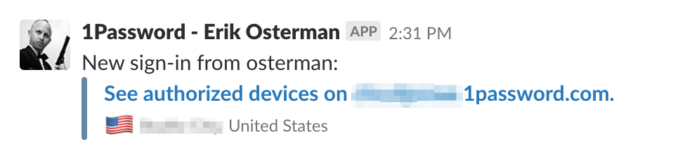
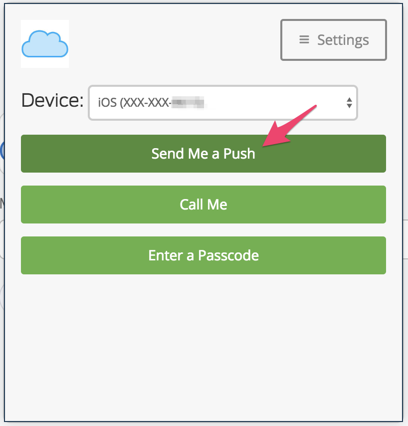
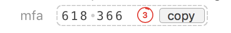

The 1Password for Teams product by AgileBits is argubably the most popular SaaS-based password management tool. In our opinion, it offers a better user experience over apps like LastPass as well as provides integration with Duo and Slack for real-time activity notifications.
Here are some of our recommended practices for working with 1Password. If your organization choses an alternative password management solution, we recommend implementing compensating controls.
With real-time slack notifications, you’ll be able to monitor logins for anomalies.

Leverage Duo push notifications for MFA. With Duo, you can do full-on geofencing to ensure logins do not come from untrusted locations.

Define teams in terms of roles (E.g. production-admin, staging-admin, dns, finance, etc).
We use 1Password to store the AWS Master Account “root” credentials. Share OTP (MFA) codes with trusted admins.
